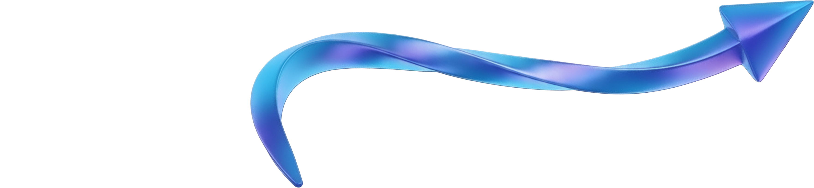

A Abordagem
Vídeos de alto padrão que conectam sua marca ao seu público.
Construindo verdadeiras experiências visuais. Projetamos e captamos material cinematográfico desenhado para solidificar a sua autoridade no mercado digital.
- Padrão Cinematográfico Premium
- Retenção Magnética de Público
- Engenharia Focada em Conversão

Formato Vertical
Alta Retenção.
Fullscreen.
Deslize pela galeria para explorar fragmentos das direções verticais desenhadas para engajar instantaneamente em redes sociais.